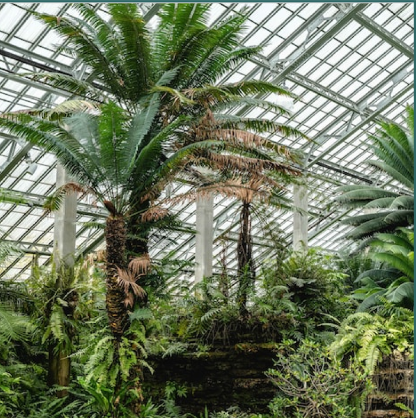
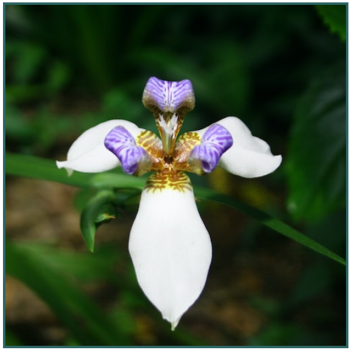

Tips for cultivating tropical flowers at home:
Tropical flowers are famous for their beauty and vibrant colors and go beyond just ornaments. The climatic factor is very important in cultivating different species here in Brazil, and due to the immense variety of environments such as hot climate and fertile soil, we have access to various varieties of tropical flowers. It is possible to cultivate some species of tropical flowers at home, and for that, some care is necessary, such as:
- Keep the flower in environments with mild climate and good lighting;
- Keep the soil of the tropical flower always moist, but avoid overwatering it;
- Provide a space for blooming of at least 1.20m in size;
- Apply organic fertilizers and nutrients to the soil where the tropical flower is planted.
Tropical flowers can also be cultivated in environments such as vertical gardens, outdoor gardens, or even on a balcony. Now, if you want to cultivate them in an indoor environment, such as porcelain pots, clay pots, or cachepots, the most recommended is the cut tropical flower.
How to preserve flowers?
Keep the flower in environments with mild climate and good lighting; Keep the soil of the tropical flower always moist, but avoid overwatering it; Provide a space for blooming of at least 1.20m in size; Apply organic fertilizers and nutrients to the soil where the tropical flower is planted.
Cattleya labiata
Description
Keep the flower in environments with mild climate and good lighting; Keep the soil of the tropical flower always moist, but avoid overwatering it; Provide a space for blooming of at least 1.20m in size; Apply organic fertilizers and nutrients to the soil where the tropical flower is planted.
Tips
The relative humidity of the air needs to be high, just like in the habitat where Cattleya labiata is found. Watering can be abundant, but the substrate needs to dry quickly. Like the majority of orchids, it does not tolerate damp roots for long periods.
Soil
Easy like most Cattleya species. It tolerates being planted with various types of substrate in clay pots, plastic pots, baskets, or even on hard wood trunks.
Climate
The relative humidity of the air needs to be high.
Lighting
High luminosity, good ventilation, and plenty of light, avoiding direct sunlight.
Watering
To water mature Cattleyas, allow the substrate to dry well before watering again. Excessive water usually kills them more than a lack of it. With seedlings, it should be different; they need more frequent watering, keeping the substrate slightly moist. Use the finger test to confirm if the substrate is dry.